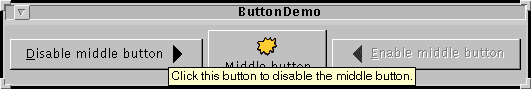

Feedback Form
|
|
Start of Tutorial > Start of Trail > Start of Lesson |
Search
Feedback Form |
Creating a tool tip for anyJComponentis easy. You just use thesetToolTipTextmethod to set up a tool tip for the component. For example, to add tool tips to three buttons, you add only three lines of code:When the user of the program pauses with the cursor over any of the program's buttons, the tool tip for the button comes up. You can see this by running theb1.setToolTipText("Click this button to disable the middle button."); b2.setToolTipText("This middle button does nothing when you click it."); b3.setToolTipText("Click this button to enable the middle button.");ButtonDemoexample, which is explained in How to Use Buttons, Check Boxes, and Radio Buttons. Here's a picture of the tool tip that appears when the cursor pauses over the left button inButtonDemo: [Please imagine a cursor over the left button. Thank you.]
[PENDING: This figure will be updated.]For components such as tabbed panes that have multiple parts, it often makes sense to vary the tool-tip text to reflect the part of the component under the cursor. For example, a tabbed pane might use this feature to explain what will happen when you click the tab under the cursor. When you implement a tabbed pane, you can specify the tab-specific tool-tip text in an argument to the
addTaborsetToolTipTextAtmethod.Even in components that have no API for setting part-specific tool-tip text, you can generally do the job yourself. If the component supports renderers, then you can set the tool tip text on a custom renderer. You can find examples of doing this in the table and tree sections. An alternative that works for all
JComponents is creating a subclass of the component and overriding itsgetToolTipText(MouseEvent)method.
Most of the API you need to set up tool tips is in theJComponentclass, and thus is inherited by most Swing components. More tool-tip API is in individual classes such asJTabbedPane. In general, those APIs are sufficient for specifying and displaying tool tips; you usually don't need to deal directly with the implementing classes,JToolTipand
ToolTipManagerThe following table lists the
JComponenttool tip API. For information on individual components' support for tool tips, see the how-to section for the component in question.
Tool Tip API in JComponentMethod Purpose setToolTipText(String)If the specified string is non-null, then this method registers the component as having a tool tip and makes the tool tip (when displayed) have the specified text. If the argument is null, then this method turns off tool tips for this component. String getToolTipText()Returns the string that was previously specified with setToolTipText.String getToolTipText(MouseEvent)By default, returns the same value returned by getToolTipText(). Multi-part components such asJTabbedPane,JTable, andJTreeoverride this method to return a string associated with the mouse event location. For example, each tab in a tabbed pane can have different tool-tip text.Point getToolTipLocation(MouseEvent)Get the location (in the receiving component's coordinate system) where the upper left corner of the component's tool tip will appear. The argument is the event that caused the tool tip to be shown. The default return value is null, which tells the Swing system to choose a location.
This table shows some examples that use tool tips and where those examples are described.
Example Where Described Notes ButtonDemoThis section and How to Use Buttons, Check Boxes, and Radio Buttons Uses a tool tip to provide instructions for a button. IconDemoAppletHow to Use Icons Uses a tool tip in a label to provide name and size information for an image. TabbedPaneDemoHow to Use Tabbed Panes Uses an argument to the addTabmethod to specify tool tip text for each tab.TableRenderDemoSpecifying Tool Tips for Cells Adds tool tips to a table using a renderer. TableToolTipsDemoSpecifying Tool Tips for Cells, Specifying Tool Tips for Column Headers Adds tool tips to a table using various techniques. TreeIconDemo2Customizing a Tree's Display Adds tool tips to a tree using a custom renderer. ActionDemoHow to Use Actions Adds tool tips to buttons created using Actions.
|
|
Start of Tutorial > Start of Trail > Start of Lesson |
Search
Feedback Form |
Copyright 1995-2004 Sun Microsystems, Inc. All rights reserved.